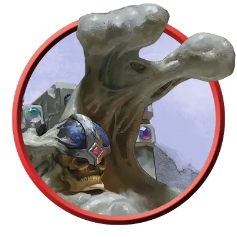

Психическая серая слизь
Psychic Gray Ooze
Средняя Слизь, без мировоззрения

Класс Защиты 9 Инициатива −1 (9)
Хиты 37 (5к8 + 15)
Скорость 10 футов, Лазания 10 футов
| мод | спас | ||
|---|---|---|---|
| СИЛ | 12 | +1 | +1 |
| ЛОВ | 8 | −1 | −1 |
| ТЕЛ | 16 | +3 | +3 |
| мод | спас | ||
|---|---|---|---|
| ИНТ | 10 | +0 | +0 |
| МДР | 6 | −2 | −2 |
| ХАР | 2 | −4 | −4 |
Сопротивление урону Кислота, Огонь, Психический, Холод
Иммунитеты Испуганный, Истощение, Оглохший, Опрокинутый, Опутанный, Ослеплённый, Очарованный, Схваченный
Чувства пассивное Восприятие 8, Слепое зрение 60 футов
Языки нет
Опасность 1 (200 опыта; БВ +2)
Особенности
Аморфность. Слизь может проходить через пространство шириной всего 1 дюйм, не тратя на это дополнительное перемещение.
Действия
Ложноножка. Бросок рукопашной атаки: +3, досягаемость 5 фт. Попадание: 11 (3к6 + 1) урона Кислотой, и цель получает Помеху на спасброски Интеллекта до конца следующего хода слизи.
Психическое сдавливание. Спасбросок Интеллекта: Сл 10, одно видимое слизью существо в 60 футах. Провал: 13 (3к8) Психического урона.
Реакции
Разъедание разума. Условие: Слизь проваливает спасбросок против заклинания или другого магического эффекта, исходящего от существа. Эффект: Вызвавшее ответ существо получает 3 (1к6) Психического урона.
Бонус мастерства +2
Среда обитания Бездна
Сокровища Оружейные
Серые слизи
Ненасытные сгустки и последствия магических провалов
Серые слизи — это массы хищной едкой субстанции, что терпеливо поджидают добычу, сливаясь с каменным окружением.
Психические серые слизи наделены мощными псионическими способностями. Эти существа порой возникают из экспериментов, когда заклинатель терпит крах, пытаясь призвать или создать существ, связанных со Стихийным планом Земли — будь то горгульи или гомункулы.